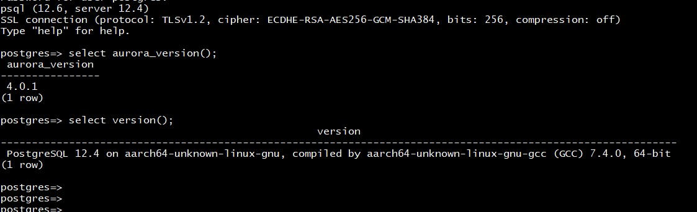

This was first published on https://www.dbi-services.com/blog/aws-postgresql-on-graviton2-aarch64/ (2021-03-10)
Republishing here for new followers. The content is related to the versions available at the publication date.
.
In the previous post I have run PostgreSQL on AWS m6gd.2xlarge (ARM Graviton2 processor).
I didn’t precise the compilation option and this post will give more details following this feedback:
@FranckPachot thanks for sharing the results. Our own testing showed similar perf when using the default gcc7. However, with newer compiler and use of LSE, the graviton2 would provide higher performance : https://t.co/x9OgFqiPPy
— NB (@N_B__N_B) March 9, 2021
First, the PostgreSQL ./configure has correctly detected ARM and compiled with the following flags: -march=armv8-a+crc
This is ARM v8. However, LSE (Large System Extensions) for atomic instructions were added later in ARM v8.1 and they can make a huge difference on PostgreSQL especially with spinlocks on on high CPU usage.
I followed the information in https://github.com/aws/aws-graviton-getting-started/blob/master/c-c++.md to check the binaries after compilation.
for i in $(find postgres/src/backend -name "*.o") ; do objdump -d "$i" | awk '/:$/{w=$2}/aarch64_(cas|casp|swp|ldadd|stadd|ldclr|stclr|ldeor|steor|ldset|stset|ldsmax|stsmax|ldsmin|stsmin|ldumax|stumax|ldumin|stumin)/{printf "%-27s %-20s %-30s %-60s\n","(LSE instructions)",$NF,w,f}' f="$i" ; done | sort | uniq -c | sort -rnk1,4
8 (LSE instructions) <__aarch64_swp4_acq> <StartupXLOG>: postgres/src/backend/access/transam/xlog.o
7 (LSE instructions) <__aarch64_swp4_acq> <BitmapHeapNext>: postgres/src/backend/executor/nodeBitmapHeapscan.o
6 (LSE instructions) <__aarch64_ldclr4_acq_rel> <LWLockDequeueSelf>: postgres/src/backend/storage/lmgr/lwlock.o
6 (LSE instructions) <__aarch64_cas8_acq_rel> <shm_mq_send_bytes>: postgres/src/backend/storage/ipc/shm_mq.o
5 (LSE instructions) <__aarch64_swp4_acq> <WalReceiverMain>: postgres/src/backend/replication/walreceiver.o
5 (LSE instructions) <__aarch64_cas8_acq_rel> <shm_mq_receive_bytes.isra.0>: postgres/src/backend/storage/ipc/shm_mq.o
4 (LSE instructions) <__aarch64_swp4_acq> <ProcessRepliesIfAny>: postgres/src/backend/replication/walsender.o
4 (LSE instructions) <__aarch64_swp4_acq> <hash_search_with_hash_value>: postgres/src/backend/utils/hash/dynahash.o
4 (LSE instructions) <__aarch64_swp4_acq> <copy_replication_slot>: postgres/src/backend/replication/slotfuncs.o
4 (LSE instructions) <__aarch64_ldadd4_acq_rel> <parallel_vacuum_index>: postgres/src/backend/access/heap/vacuumlazy.o
4 (LSE instructions) <__aarch64_cas4_acq_rel> <LWLockAcquire>: postgres/src/backend/storage/lmgr/lwlock.o
3 (LSE instructions) <__aarch64_swp4_acq> <xlog_redo>: postgres/src/backend/access/transam/xlog.o
3 (LSE instructions) <__aarch64_swp4_acq> <XLogInsertRecord>: postgres/src/backend/access/transam/xlog.o
3 (LSE instructions) <__aarch64_swp4_acq> <SaveSlotToPath>: postgres/src/backend/replication/slot.o
3 (LSE instructions) <__aarch64_swp4_acq> <RequestCheckpoint>: postgres/src/backend/postmaster/checkpointer.o
3 (LSE instructions) <__aarch64_swp4_acq> <LogicalRepSyncTableStart>: postgres/src/backend/replication/logical/tablesync.o
3 (LSE instructions) <__aarch64_swp4_acq> <LogicalConfirmReceivedLocation>: postgres/src/backend/replication/logical/logical.o
3 (LSE instructions) <__aarch64_swp4_acq> <InvalidateObsoleteReplicationSlots>: postgres/src/backend/replication/slot.o
3 (LSE instructions) <__aarch64_swp4_acq> <CreateInitDecodingContext>: postgres/src/backend/replication/logical/logical.o
3 (LSE instructions) <__aarch64_swp4_acq> <CreateCheckPoint>: postgres/src/backend/access/transam/xlog.o
3 (LSE instructions) <__aarch64_swp4_acq> <CheckpointerMain>: postgres/src/backend/postmaster/checkpointer.o
3 (LSE instructions) <__aarch64_ldclr4_acq_rel> <LWLockQueueSelf>: postgres/src/backend/storage/lmgr/lwlock.o
3 (LSE instructions) <__aarch64_ldadd4_acq_rel> <tbm_prepare_shared_iterate>: postgres/src/backend/nodes/tidbitmap.o
3 (LSE instructions) <__aarch64_ldadd4_acq_rel> <tbm_free_shared_area>: postgres/src/backend/nodes/tidbitmap.o
3 (LSE instructions) <__aarch64_cas8_acq_rel> <ProcessProcSignalBarrier>: postgres/src/backend/storage/ipc/procsignal.o
3 (LSE instructions) <__aarch64_cas8_acq_rel> <ExecParallelHashIncreaseNumBatches>: postgres/src/backend/executor/nodeHash.o
2 (LSE instructions) <__aarch64_swp4_acq> <XLogWrite>: postgres/src/backend/access/transam/xlog.o
2 (LSE instructions) <__aarch64_swp4_acq> <XLogSendPhysical>: postgres/src/backend/replication/walsender.o
2 (LSE instructions) <__aarch64_swp4_acq> <XLogBackgroundFlush>: postgres/src/backend/access/transam/xlog.o
2 (LSE instructions) <__aarch64_swp4_acq> <WalRcvStreaming>: postgres/src/backend/replication/walreceiverfuncs.o
2 (LSE instructions) <__aarch64_swp4_acq> <WalRcvRunning>: postgres/src/backend/replication/walreceiverfuncs.o
2 (LSE instructions) <__aarch64_swp4_acq> <WalRcvDie>: postgres/src/backend/replication/walreceiver.o
2 (LSE instructions) <__aarch64_swp4_acq> <TransactionIdLimitedForOldSnapshots>: postgres/src/backend/utils/time/snapmgr.o
2 (LSE instructions) <__aarch64_swp4_acq> <StrategyGetBuffer>: postgres/src/backend/storage/buffer/freelist.o
2 (LSE instructions) <__aarch64_swp4_acq> <shm_mq_wait_internal>: postgres/src/backend/storage/ipc/shm_mq.o
2 (LSE instructions) <__aarch64_swp4_acq> <ReplicationSlotReserveWal>: postgres/src/backend/replication/slot.o
2 (LSE instructions) <__aarch64_swp4_acq> <ReplicationSlotRelease>: postgres/src/backend/replication/slot.o
2 (LSE instructions) <__aarch64_swp4_acq> <ProcKill>: postgres/src/backend/storage/lmgr/proc.o
2 (LSE instructions) <__aarch64_swp4_acq> <process_syncing_tables>: postgres/src/backend/replication/logical/tablesync.o
2 (LSE instructions) <__aarch64_swp4_acq> <pg_get_replication_slots>: postgres/src/backend/replication/slotfuncs.o
2 (LSE instructions) <__aarch64_swp4_acq> <exec_replication_command>: postgres/src/backend/replication/walsender.o
2 (LSE instructions) <__aarch64_swp4_acq> <CreateRestartPoint>: postgres/src/backend/access/transam/xlog.o
2 (LSE instructions) <__aarch64_swp4_acq> <ConditionVariableBroadcast>: postgres/src/backend/storage/lmgr/condition_variable.o
2 (LSE instructions) <__aarch64_swp4_acq> <BarrierArriveAndWait>: postgres/src/backend/storage/ipc/barrier.o
2 (LSE instructions) <__aarch64_ldset4_acq_rel> <LWLockWaitListLock>: postgres/src/backend/storage/lmgr/lwlock.o
2 (LSE instructions) <__aarch64_ldclr4_acq_rel> <LWLockWaitForVar>: postgres/src/backend/storage/lmgr/lwlock.o
2 (LSE instructions) <__aarch64_ldclr4_acq_rel> <LWLockUpdateVar>: postgres/src/backend/storage/lmgr/lwlock.o
2 (LSE instructions) <__aarch64_ldadd4_acq_rel> <vacuum_delay_point>: postgres/src/backend/commands/vacuum.o
2 (LSE instructions) <__aarch64_ldadd4_acq_rel> <StrategyGetBuffer>: postgres/src/backend/storage/buffer/freelist.o
2 (LSE instructions) <__aarch64_ldadd4_acq_rel> <LWLockRelease>: postgres/src/backend/storage/lmgr/lwlock.o
2 (LSE instructions) <__aarch64_ldadd4_acq_rel> <lazy_parallel_vacuum_indexes>: postgres/src/backend/access/heap/vacuumlazy.o
2 (LSE instructions) <__aarch64_cas8_acq_rel> <WalReceiverMain>: postgres/src/backend/replication/walreceiver.o
2 (LSE instructions) <__aarch64_cas8_acq_rel> <WaitForProcSignalBarrier>: postgres/src/backend/storage/ipc/procsignal.o
2 (LSE instructions) <__aarch64_cas8_acq_rel> <shm_mq_receive>: postgres/src/backend/storage/ipc/shm_mq.o
2 (LSE instructions) <__aarch64_cas8_acq_rel> <ResolveRecoveryConflictWithLock>: postgres/src/backend/storage/ipc/standby.o
2 (LSE instructions) <__aarch64_cas8_acq_rel> <ProcSignalInit>: postgres/src/backend/storage/ipc/procsignal.o
2 (LSE instructions) <__aarch64_cas8_acq_rel> <ExecParallelHashTableInsert>: postgres/src/backend/executor/nodeHash.o
2 (LSE instructions) <__aarch64_cas8_acq_rel> <ExecParallelHashTableInsertCurrentBatch>: postgres/src/backend/executor/nodeHash.o
2 (LSE instructions) <__aarch64_cas8_acq_rel> <ExecParallelHashIncreaseNumBuckets>: postgres/src/backend/executor/nodeHash.o
2 (LSE instructions) <__aarch64_cas4_acq_rel> <TransactionIdSetTreeStatus>: postgres/src/backend/access/transam/clog.o
2 (LSE instructions) <__aarch64_cas4_acq_rel> <ProcArrayEndTransaction>: postgres/src/backend/storage/ipc/procarray.o
2 (LSE instructions) <__aarch64_cas4_acq_rel> <LWLockAcquireOrWait>: postgres/src/backend/storage/lmgr/lwlock.o
1 (LSE instructions) <__aarch64_swp4_acq> <XLogWalRcvFlush.part.4>: postgres/src/backend/replication/walreceiver.o
1 (LSE instructions) <__aarch64_swp4_acq> <XLogSetReplicationSlotMinimumLSN>: postgres/src/backend/access/transam/xlog.o
1 (LSE instructions) <__aarch64_swp4_acq> <XLogSetAsyncXactLSN>: postgres/src/backend/access/transam/xlog.o
1 (LSE instructions) <__aarch64_swp4_acq> <XLogSendLogical>: postgres/src/backend/replication/walsender.o
1 (LSE instructions) <__aarch64_swp4_acq> <XLogPageRead>: postgres/src/backend/access/transam/xlog.o
1 (LSE instructions) <__aarch64_swp4_acq> <XLogNeedsFlush>: postgres/src/backend/access/transam/xlog.o
1 (LSE instructions) <__aarch64_swp4_acq> <XLogGetLastRemovedSegno>: postgres/src/backend/access/transam/xlog.o
1 (LSE instructions) <__aarch64_swp4_acq> <XLogFlush>: postgres/src/backend/access/transam/xlog.o
1 (LSE instructions) <__aarch64_swp4_acq> <worker_freeze_result_tape>: postgres/src/backend/utils/sort/tuplesort.o
1 (LSE instructions) <__aarch64_swp4_acq> <WalSndWakeup>: postgres/src/backend/replication/walsender.o
1 (LSE instructions) <__aarch64_swp4_acq> <WalSndWaitStopping>: postgres/src/backend/replication/walsender.o
1 (LSE instructions) <__aarch64_swp4_acq> <WalSndSetState>: postgres/src/backend/replication/walsender.o
1 (LSE instructions) <__aarch64_swp4_acq> <WalSndRqstFileReload>: postgres/src/backend/replication/walsender.o
1 (LSE instructions) <__aarch64_swp4_acq> <WalSndKill>: postgres/src/backend/replication/walsender.o
1 (LSE instructions) <__aarch64_swp4_acq> <WalSndInitStopping>: postgres/src/backend/replication/walsender.o
1 (LSE instructions) <__aarch64_swp4_acq> <WalRcvForceReply>: postgres/src/backend/replication/walreceiver.o
1 (LSE instructions) <__aarch64_swp4_acq> <WaitXLogInsertionsToFinish>: postgres/src/backend/access/transam/xlog.o
1 (LSE instructions) <__aarch64_swp4_acq> <UpdateMinRecoveryPoint.part.10>: postgres/src/backend/access/transam/xlog.o
1 (LSE instructions) <__aarch64_swp4_acq> <tuplesort_performsort>: postgres/src/backend/utils/sort/tuplesort.o
1 (LSE instructions) <__aarch64_swp4_acq> <tuplesort_begin_common>: postgres/src/backend/utils/sort/tuplesort.o
1 (LSE instructions) <__aarch64_swp4_acq> <table_block_parallelscan_startblock_init>: postgres/src/backend/access/table/tableam.o
1 (LSE instructions) <__aarch64_swp4_acq> <SyncRepInitConfig>: postgres/src/backend/replication/syncrep.o
1 (LSE instructions) <__aarch64_swp4_acq> <SyncRepGetCandidateStandbys>: postgres/src/backend/replication/syncrep.o
1 (LSE instructions) <__aarch64_swp4_acq> <StrategySyncStart>: postgres/src/backend/storage/buffer/freelist.o
1 (LSE instructions) <__aarch64_swp4_acq> <StrategyNotifyBgWriter>: postgres/src/backend/storage/buffer/freelist.o
1 (LSE instructions) <__aarch64_swp4_acq> <StrategyFreeBuffer>: postgres/src/backend/storage/buffer/freelist.o
1 (LSE instructions) <__aarch64_swp4_acq> <SnapshotTooOldMagicForTest>: postgres/src/backend/utils/time/snapmgr.o
1 (LSE instructions) <__aarch64_swp4_acq> <s_lock>: postgres/src/backend/storage/lmgr/s_lock.o
1 (LSE instructions) <__aarch64_swp4_acq> <SIInsertDataEntries>: postgres/src/backend/storage/ipc/sinvaladt.o
1 (LSE instructions) <__aarch64_swp4_acq> <SIGetDataEntries>: postgres/src/backend/storage/ipc/sinvaladt.o
1 (LSE instructions) <__aarch64_swp4_acq> <ShutdownWalRcv>: postgres/src/backend/replication/walreceiverfuncs.o
1 (LSE instructions) <__aarch64_swp4_acq> <shm_toc_insert>: postgres/src/backend/storage/ipc/shm_toc.o
1 (LSE instructions) <__aarch64_swp4_acq> <shm_toc_freespace>: postgres/src/backend/storage/ipc/shm_toc.o
1 (LSE instructions) <__aarch64_swp4_acq> <shm_toc_allocate>: postgres/src/backend/storage/ipc/shm_toc.o
1 (LSE instructions) <__aarch64_swp4_acq> <shm_mq_set_sender>: postgres/src/backend/storage/ipc/shm_mq.o
1 (LSE instructions) <__aarch64_swp4_acq> <shm_mq_set_receiver>: postgres/src/backend/storage/ipc/shm_mq.o
1 (LSE instructions) <__aarch64_swp4_acq> <shm_mq_sendv>: postgres/src/backend/storage/ipc/shm_mq.o
1 (LSE instructions) <__aarch64_swp4_acq> <shm_mq_get_sender>: postgres/src/backend/storage/ipc/shm_mq.o
1 (LSE instructions) <__aarch64_swp4_acq> <shm_mq_get_receiver>: postgres/src/backend/storage/ipc/shm_mq.o
1 (LSE instructions) <__aarch64_swp4_acq> <shm_mq_detach_internal>: postgres/src/backend/storage/ipc/shm_mq.o
1 (LSE instructions) <__aarch64_swp4_acq> <ShmemAllocRaw>: postgres/src/backend/storage/ipc/shmem.o
1 (LSE instructions) <__aarch64_swp4_acq> <SharedFileSetOnDetach>: postgres/src/backend/storage/file/sharedfileset.o
1 (LSE instructions) <__aarch64_swp4_acq> <SharedFileSetAttach>: postgres/src/backend/storage/file/sharedfileset.o
1 (LSE instructions) <__aarch64_swp4_acq> <SetWalWriterSleeping>: postgres/src/backend/access/transam/xlog.o
1 (LSE instructions) <__aarch64_swp4_acq> <SetRecoveryPause>: postgres/src/backend/access/transam/xlog.o
1 (LSE instructions) <__aarch64_swp4_acq> <SetPromoteIsTriggered>: postgres/src/backend/access/transam/xlog.o
1 (LSE instructions) <__aarch64_swp4_acq> <SetOldSnapshotThresholdTimestamp>: postgres/src/backend/utils/time/snapmgr.o
1 (LSE instructions) <__aarch64_swp4_acq> <RequestXLogStreaming>: postgres/src/backend/replication/walreceiverfuncs.o
1 (LSE instructions) <__aarch64_swp4_acq> <ReplicationSlotsDropDBSlots>: postgres/src/backend/replication/slot.o
1 (LSE instructions) <__aarch64_swp4_acq> <ReplicationSlotsCountDBSlots>: postgres/src/backend/replication/slot.o
1 (LSE instructions) <__aarch64_swp4_acq> <ReplicationSlotsComputeRequiredXmin>: postgres/src/backend/replication/slot.o
1 (LSE instructions) <__aarch64_swp4_acq> <ReplicationSlotsComputeRequiredLSN>: postgres/src/backend/replication/slot.o
1 (LSE instructions) <__aarch64_swp4_acq> <ReplicationSlotsComputeLogicalRestartLSN>: postgres/src/backend/replication/slot.o
1 (LSE instructions) <__aarch64_swp4_acq> <ReplicationSlotPersist>: postgres/src/backend/replication/slot.o
1 (LSE instructions) <__aarch64_swp4_acq> <ReplicationSlotMarkDirty>: postgres/src/backend/replication/slot.o
1 (LSE instructions) <__aarch64_swp4_acq> <ReplicationSlotDropPtr>: postgres/src/backend/replication/slot.o
1 (LSE instructions) <__aarch64_swp4_acq> <ReplicationSlotCreate>: postgres/src/backend/replication/slot.o
1 (LSE instructions) <__aarch64_swp4_acq> <ReplicationSlotCleanup>: postgres/src/backend/replication/slot.o
1 (LSE instructions) <__aarch64_swp4_acq> <ReplicationSlotAcquireInternal>: postgres/src/backend/replication/slot.o
1 (LSE instructions) <__aarch64_swp4_acq> <RemoveOldXlogFiles>: postgres/src/backend/access/transam/xlog.o
1 (LSE instructions) <__aarch64_swp4_acq> <RemoveLocalLock>: postgres/src/backend/storage/lmgr/lock.o
1 (LSE instructions) <__aarch64_swp4_acq> <RecoveryRestartPoint>: postgres/src/backend/access/transam/xlog.o
1 (LSE instructions) <__aarch64_swp4_acq> <RecoveryIsPaused>: postgres/src/backend/access/transam/xlog.o
1 (LSE instructions) <__aarch64_swp4_acq> <ReadRecord>: postgres/src/backend/access/transam/xlog.o
1 (LSE instructions) <__aarch64_swp4_acq> <PublishStartupProcessInformation>: postgres/src/backend/storage/lmgr/proc.o
1 (LSE instructions) <__aarch64_swp4_acq> <PromoteIsTriggered>: postgres/src/backend/access/transam/xlog.o
1 (LSE instructions) <__aarch64_swp4_acq> <ProcSendSignal>: postgres/src/backend/storage/lmgr/proc.o
1 (LSE instructions) <__aarch64_swp4_acq> <ProcessWalSndrMessage>: postgres/src/backend/replication/walreceiver.o
1 (LSE instructions) <__aarch64_swp4_acq> <PhysicalReplicationSlotNewXmin>: postgres/src/backend/replication/walsender.o
1 (LSE instructions) <__aarch64_swp4_acq> <pg_stat_get_wal_senders>: postgres/src/backend/replication/walsender.o
1 (LSE instructions) <__aarch64_swp4_acq> <pg_stat_get_wal_receiver>: postgres/src/backend/replication/walreceiver.o
1 (LSE instructions) <__aarch64_swp4_acq> <pg_replication_slot_advance>: postgres/src/backend/replication/slotfuncs.o
1 (LSE instructions) <__aarch64_swp4_acq> <ParallelWorkerReportLastRecEnd>: postgres/src/backend/access/transam/parallel.o
1 (LSE instructions) <__aarch64_swp4_acq> <MaintainOldSnapshotTimeMapping>: postgres/src/backend/utils/time/snapmgr.o
1 (LSE instructions) <__aarch64_swp4_acq> <LWLockNewTrancheId>: postgres/src/backend/storage/lmgr/lwlock.o
1 (LSE instructions) <__aarch64_swp4_acq> <LogicalIncreaseXminForSlot>: postgres/src/backend/replication/logical/logical.o
1 (LSE instructions) <__aarch64_swp4_acq> <LogicalIncreaseRestartDecodingForSlot>: postgres/src/backend/replication/logical/logical.o
1 (LSE instructions) <__aarch64_swp4_acq> <lock_twophase_recover>: postgres/src/backend/storage/lmgr/lock.o
1 (LSE instructions) <__aarch64_swp4_acq> <LockRefindAndRelease>: postgres/src/backend/storage/lmgr/lock.o
1 (LSE instructions) <__aarch64_swp4_acq> <LockAcquireExtended>: postgres/src/backend/storage/lmgr/lock.o
1 (LSE instructions) <__aarch64_swp4_acq> <KnownAssignedXidsSearch>: postgres/src/backend/storage/ipc/procarray.o
1 (LSE instructions) <__aarch64_swp4_acq> <KnownAssignedXidsGetAndSetXmin>: postgres/src/backend/storage/ipc/procarray.o
1 (LSE instructions) <__aarch64_swp4_acq> <KnownAssignedXidsAdd>: postgres/src/backend/storage/ipc/procarray.o
1 (LSE instructions) <__aarch64_swp4_acq> <KeepLogSeg>: postgres/src/backend/access/transam/xlog.o
1 (LSE instructions) <__aarch64_swp4_acq> <InitWalSender>: postgres/src/backend/replication/walsender.o
1 (LSE instructions) <__aarch64_swp4_acq> <InitProcess>: postgres/src/backend/storage/lmgr/proc.o
1 (LSE instructions) <__aarch64_swp4_acq> <InitAuxiliaryProcess>: postgres/src/backend/storage/lmgr/proc.o
1 (LSE instructions) <__aarch64_swp4_acq> <HotStandbyActive>: postgres/src/backend/access/transam/xlog.o
1 (LSE instructions) <__aarch64_swp4_acq> <HaveNFreeProcs>: postgres/src/backend/storage/lmgr/proc.o
1 (LSE instructions) <__aarch64_swp4_acq> <GetXLogWriteRecPtr>: postgres/src/backend/access/transam/xlog.o
1 (LSE instructions) <__aarch64_swp4_acq> <GetXLogReplayRecPtr>: postgres/src/backend/access/transam/xlog.o
1 (LSE instructions) <__aarch64_swp4_acq> <GetXLogInsertRecPtr>: postgres/src/backend/access/transam/xlog.o
1 (LSE instructions) <__aarch64_swp4_acq> <GetWalRcvFlushRecPtr>: postgres/src/backend/replication/walreceiverfuncs.o
1 (LSE instructions) <__aarch64_swp4_acq> <GetSnapshotCurrentTimestamp>: postgres/src/backend/utils/time/snapmgr.o
1 (LSE instructions) <__aarch64_swp4_acq> <GetReplicationTransferLatency>: postgres/src/backend/replication/walreceiverfuncs.o
1 (LSE instructions) <__aarch64_swp4_acq> <GetReplicationApplyDelay>: postgres/src/backend/replication/walreceiverfuncs.o
1 (LSE instructions) <__aarch64_swp4_acq> <GetRedoRecPtr>: postgres/src/backend/access/transam/xlog.o
1 (LSE instructions) <__aarch64_swp4_acq> <GetRecoveryState>: postgres/src/backend/access/transam/xlog.o
1 (LSE instructions) <__aarch64_swp4_acq> <GetOldSnapshotThresholdTimestamp>: postgres/src/backend/utils/time/snapmgr.o
1 (LSE instructions) <__aarch64_swp4_acq> <GetLatestXTime>: postgres/src/backend/access/transam/xlog.o
1 (LSE instructions) <__aarch64_swp4_acq> <GetInsertRecPtr>: postgres/src/backend/access/transam/xlog.o
1 (LSE instructions) <__aarch64_swp4_acq> <GetFlushRecPtr>: postgres/src/backend/access/transam/xlog.o
1 (LSE instructions) <__aarch64_swp4_acq> <GetFakeLSNForUnloggedRel>: postgres/src/backend/access/transam/xlog.o
1 (LSE instructions) <__aarch64_swp4_acq> <GetCurrentChunkReplayStartTime>: postgres/src/backend/access/transam/xlog.o
1 (LSE instructions) <__aarch64_swp4_acq> <FirstCallSinceLastCheckpoint>: postgres/src/backend/postmaster/checkpointer.o
1 (LSE instructions) <__aarch64_swp4_acq> <element_alloc>: postgres/src/backend/utils/hash/dynahash.o
1 (LSE instructions) <__aarch64_swp4_acq> <do_pg_stop_backup>: postgres/src/backend/access/transam/xlog.o
1 (LSE instructions) <__aarch64_swp4_acq> <do_pg_start_backup>: postgres/src/backend/access/transam/xlog.o
1 (LSE instructions) <__aarch64_swp4_acq> <DecodingContextFindStartpoint>: postgres/src/backend/replication/logical/logical.o
1 (LSE instructions) <__aarch64_swp4_acq> <ConditionVariableTimedSleep>: postgres/src/backend/storage/lmgr/condition_variable.o
1 (LSE instructions) <__aarch64_swp4_acq> <ConditionVariableSignal>: postgres/src/backend/storage/lmgr/condition_variable.o
1 (LSE instructions) <__aarch64_swp4_acq> <ConditionVariablePrepareToSleep>: postgres/src/backend/storage/lmgr/condition_variable.o
1 (LSE instructions) <__aarch64_swp4_acq> <ConditionVariableCancelSleep>: postgres/src/backend/storage/lmgr/condition_variable.o
1 (LSE instructions) <__aarch64_swp4_acq> <ComputeXidHorizons>: postgres/src/backend/storage/ipc/procarray.o
1 (LSE instructions) <__aarch64_swp4_acq> <CheckXLogRemoved>: postgres/src/backend/access/transam/xlog.o
1 (LSE instructions) <__aarch64_swp4_acq> <CheckRecoveryConsistency.part.11>: postgres/src/backend/access/transam/xlog.o
1 (LSE instructions) <__aarch64_swp4_acq> <_bt_parallel_seize>: postgres/src/backend/access/nbtree/nbtree.o
1 (LSE instructions) <__aarch64_swp4_acq> <_bt_parallel_scan_and_sort>: postgres/src/backend/access/nbtree/nbtsort.o
1 (LSE instructions) <__aarch64_swp4_acq> <btparallelrescan>: postgres/src/backend/access/nbtree/nbtree.o
1 (LSE instructions) <__aarch64_swp4_acq> <_bt_parallel_release>: postgres/src/backend/access/nbtree/nbtree.o
1 (LSE instructions) <__aarch64_swp4_acq> <_bt_parallel_done>: postgres/src/backend/access/nbtree/nbtree.o
1 (LSE instructions) <__aarch64_swp4_acq> <_bt_parallel_advance_array_keys>: postgres/src/backend/access/nbtree/nbtree.o
1 (LSE instructions) <__aarch64_swp4_acq> <btbuild>: postgres/src/backend/access/nbtree/nbtsort.o
1 (LSE instructions) <__aarch64_swp4_acq> <BarrierParticipants>: postgres/src/backend/storage/ipc/barrier.o
1 (LSE instructions) <__aarch64_swp4_acq> <BarrierDetach>: postgres/src/backend/storage/ipc/barrier.o
1 (LSE instructions) <__aarch64_swp4_acq> <BarrierAttach>: postgres/src/backend/storage/ipc/barrier.o
1 (LSE instructions) <__aarch64_swp4_acq> <BarrierArriveAndDetach>: postgres/src/backend/storage/ipc/barrier.o
1 (LSE instructions) <__aarch64_swp4_acq> <BarrierArriveAndDetachExceptLast>: postgres/src/backend/storage/ipc/barrier.o
1 (LSE instructions) <__aarch64_swp4_acq> <AuxiliaryProcKill>: postgres/src/backend/storage/lmgr/proc.o
1 (LSE instructions) <__aarch64_swp4_acq> <AdvanceXLInsertBuffer>: postgres/src/backend/access/transam/xlog.o
1 (LSE instructions) <__aarch64_swp4_acq> <AbortStrongLockAcquire>: postgres/src/backend/storage/lmgr/lock.o
1 (LSE instructions) <__aarch64_ldset4_acq_rel> <ProcessProcSignalBarrier>: postgres/src/backend/storage/ipc/procsignal.o
1 (LSE instructions) <__aarch64_ldset4_acq_rel> <LWLockWaitForVar>: postgres/src/backend/storage/lmgr/lwlock.o
1 (LSE instructions) <__aarch64_ldset4_acq_rel> <LWLockQueueSelf>: postgres/src/backend/storage/lmgr/lwlock.o
1 (LSE instructions) <__aarch64_ldset4_acq_rel> <LWLockDequeueSelf>: postgres/src/backend/storage/lmgr/lwlock.o
1 (LSE instructions) <__aarch64_ldset4_acq_rel> <LWLockAcquire>: postgres/src/backend/storage/lmgr/lwlock.o
1 (LSE instructions) <__aarch64_ldset4_acq_rel> <LockBufHdr>: postgres/src/backend/storage/buffer/bufmgr.o
1 (LSE instructions) <__aarch64_ldset4_acq_rel> <EmitProcSignalBarrier>: postgres/src/backend/storage/ipc/procsignal.o
1 (LSE instructions) <__aarch64_ldclr4_acq_rel> <LWLockReleaseClearVar>: postgres/src/backend/storage/lmgr/lwlock.o
1 (LSE instructions) <__aarch64_ldadd8_acq_rel> <table_block_parallelscan_nextpage>: postgres/src/backend/access/table/tableam.o
1 (LSE instructions) <__aarch64_ldadd8_acq_rel> <EmitProcSignalBarrier>: postgres/src/backend/storage/ipc/procsignal.o
1 (LSE instructions) <__aarch64_ldadd4_acq_rel> <find_or_make_matching_shared_tupledesc>: postgres/src/backend/utils/cache/typcache.o
1 (LSE instructions) <__aarch64_ldadd4_acq_rel> <ExecParallelHashJoin>: postgres/src/backend/executor/nodeHashjoin.o
1 (LSE instructions) <__aarch64_cas8_acq_rel> <table_block_parallelscan_reinitialize>: postgres/src/backend/access/table/tableam.o
1 (LSE instructions) <__aarch64_cas8_acq_rel> <ProcWakeup>: postgres/src/backend/storage/lmgr/proc.o
1 (LSE instructions) <__aarch64_cas8_acq_rel> <ProcSleep>: postgres/src/backend/storage/lmgr/proc.o
1 (LSE instructions) <__aarch64_cas8_acq_rel> <pg_stat_get_wal_receiver>: postgres/src/backend/replication/walreceiver.o
1 (LSE instructions) <__aarch64_cas8_acq_rel> <InitProcess>: postgres/src/backend/storage/lmgr/proc.o
1 (LSE instructions) <__aarch64_cas8_acq_rel> <InitAuxiliaryProcess>: postgres/src/backend/storage/lmgr/proc.o
1 (LSE instructions) <__aarch64_cas8_acq_rel> <GetWalRcvWriteRecPtr>: postgres/src/backend/replication/walreceiverfuncs.o
1 (LSE instructions) <__aarch64_cas8_acq_rel> <GetLockStatusData>: postgres/src/backend/storage/lmgr/lock.o
1 (LSE instructions) <__aarch64_cas8_acq_rel> <ExecParallelScanHashBucket>: postgres/src/backend/executor/nodeHash.o
1 (LSE instructions) <__aarch64_cas8_acq_rel> <CleanupProcSignalState>: postgres/src/backend/storage/ipc/procsignal.o
1 (LSE instructions) <__aarch64_cas4_acq_rel> <UnpinBuffer.constprop.11>: postgres/src/backend/storage/buffer/bufmgr.o
1 (LSE instructions) <__aarch64_cas4_acq_rel> <StrategySyncStart>: postgres/src/backend/storage/buffer/freelist.o
1 (LSE instructions) <__aarch64_cas4_acq_rel> <StrategyGetBuffer>: postgres/src/backend/storage/buffer/freelist.o
1 (LSE instructions) <__aarch64_cas4_acq_rel> <ProcessProcSignalBarrier>: postgres/src/backend/storage/ipc/procsignal.o
1 (LSE instructions) <__aarch64_cas4_acq_rel> <PinBuffer>: postgres/src/backend/storage/buffer/bufmgr.o
1 (LSE instructions) <__aarch64_cas4_acq_rel> <MarkBufferDirty>: postgres/src/backend/storage/buffer/bufmgr.o
1 (LSE instructions) <__aarch64_cas4_acq_rel> <LWLockRelease>: postgres/src/backend/storage/lmgr/lwlock.o
1 (LSE instructions) <__aarch64_cas4_acq_rel> <LWLockConditionalAcquire>: postgres/src/backend/storage/lmgr/lwlock.o
So, this confirms that it was compiled with -march=armv8-a and outline -moutline-atomics (which is the default in GCC >= 10 and also in the GCC 7 compiled in Amazon Linux 2). LSE (Large-System Extensions) are there, and we can see where the atomic instructions are used: WAL and buffer lightweight locks that protect access to shared memory.
for i in /usr/local/pgsql/bin/postgres $(find postgres/src/backend -name "*.o") ; do objdump -d "$i" | awk '/:$/{w=$2}/aarch64_(cas|casp|swp|ldadd|stadd|ldclr|stclr|ldeor|steor|ldset|stset|ldsmax|stsmax|ldsmin|stsmin|ldumax|stumax|ldumin|stumin)/{printf "%-27s %-40s %-40s %-60s\n","(LSE instructions)",$NF,w,f}/\t(ldxr|ldaxr|stxr|stlxr)\t/{printf "%-27s %-40s %-40s %-60s\n","(load and store exclusives)",$3,w,f}' f="$i" ; done | sort | uniq -c | sort -rn
1 (load and store exclusives) stxr <__aarch64_swp4_acq>: /usr/local/pgsql/bin/postgres
1 (load and store exclusives) stlxr <__aarch64_ldset4_acq_rel>: /usr/local/pgsql/bin/postgres
1 (load and store exclusives) stlxr <__aarch64_ldclr4_acq_rel>: /usr/local/pgsql/bin/postgres
1 (load and store exclusives) stlxr <__aarch64_ldadd8_acq_rel>: /usr/local/pgsql/bin/postgres
1 (load and store exclusives) stlxr <__aarch64_ldadd4_acq_rel>: /usr/local/pgsql/bin/postgres
1 (load and store exclusives) stlxr <__aarch64_cas8_acq_rel>: /usr/local/pgsql/bin/postgres
1 (load and store exclusives) stlxr <__aarch64_cas4_acq_rel>: /usr/local/pgsql/bin/postgres
1 (load and store exclusives) ldaxr <__aarch64_swp4_acq>: /usr/local/pgsql/bin/postgres
1 (load and store exclusives) ldaxr <__aarch64_ldset4_acq_rel>: /usr/local/pgsql/bin/postgres
1 (load and store exclusives) ldaxr <__aarch64_ldclr4_acq_rel>: /usr/local/pgsql/bin/postgres
1 (load and store exclusives) ldaxr <__aarch64_ldadd8_acq_rel>: /usr/local/pgsql/bin/postgres
1 (load and store exclusives) ldaxr <__aarch64_ldadd4_acq_rel>: /usr/local/pgsql/bin/postgres
1 (load and store exclusives) ldaxr <__aarch64_cas8_acq_rel>: /usr/local/pgsql/bin/postgres
1 (load and store exclusives) ldaxr <__aarch64_cas4_acq_rel>: /usr/local/pgsql/bin/postgres
This confirms that the PostgreSQL binary also contains load and store exclusives so that the binary can run on Graviton and Graviton2.
[ec2-user@ip-172-31-11-116 ~]$ nm /usr/local/pgsql/bin/postgres | grep -E "aarch64(_have_lse_atomics)?"
00000000008fb460 t __aarch64_cas4_acq_rel
00000000008fb490 t __aarch64_cas8_acq_rel
0000000000bbe640 b __aarch64_have_lse_atomics
00000000008fb4f0 t __aarch64_ldadd4_acq_rel
00000000008fb580 t __aarch64_ldadd8_acq_rel
00000000008fb520 t __aarch64_ldclr4_acq_rel
00000000008fb550 t __aarch64_ldset4_acq_rel
00000000008fb4c0 t __aarch64_swp4_acq
This is the run-time detection. As it was compiled for ARM v8, with atomics outlined, the same binary can run on v8 or >=v8.1
[ec2-user@ip-172-31-11-116 ~]$ gcc --version
gcc (GCC) 7.3.1 20180712 (Red Hat 7.3.1-12)
Copyright (C) 2017 Free Software Foundation, Inc.
This is free software; see the source for copying conditions. There is NO
warranty; not even for MERCHANTABILITY or FITNESS FOR A PARTICULAR PURPOSE.
This is GCC 7, but on Amazon Linux 2 it has been patched to enable -moutline-atomics by default.
Here is how I compiled the latest GCC available:
gcc --version
sudo yum -y install bzip2 git gcc gcc-c++ gmp-devel mpfr-devel libmpc-devel make flex bison
git clone https://github.com/gcc-mirror/gcc.git
cd gcc
make distclean
./configure --enable-languages=c,c++
make
sudo make install
This basically get the latest GCC fron source, compiles and installs it (please remember this is a lab – use stable versions elswhere)
[ec2-user@ip-172-31-38-254 ~]$ gcc --version
gcc (GCC) 11.0.1 20210309 (experimental)
Copyright (C) 2021 Free Software Foundation, Inc.
This is free software; see the source for copying conditions. There is NO
warranty; not even for MERCHANTABILITY or FITNESS FOR A PARTICULAR PURPOSE.Here we are: gcc 11.0.1 20210309 (experimental)
I’m running the same PGIO as in previous post
Date: Wed Mar 10 14:39:38 UTC 2021
Database connect string: "pgio".
Shared buffers: 8500MB.
Testing 4 schemas with 1 thread(s) accessing 1024M (131072 blocks) of each schema.
Running iostat, vmstat and mpstat on current host--in background.
Launching sessions. 4 schema(s) will be accessed by 1 thread(s) each.
pg_stat_database stats:
datname| blks_hit| blks_read|tup_returned|tup_fetched|tup_updated
BEFORE: pgio | 38262338086 | 562443 | 37644815538 | 37635763756 | 24
AFTER: pgio | 49691750429 | 562449 | 48890461241 | 48878858651 | 49
DBNAME: pgio. 4 schemas, 1 threads(each). Run time: 3600 seconds. RIOPS >793709<
This is a little higher than what I had: 793709 LIOPS / CPU where I had 780651 with GCC 7 but that’s still lower than the 896280 I had on x86.
Of course, there can be more optimisations as mentioned in https://github.com/aws/aws-graviton-getting-started/blob/master/c-c++.md
I’ll recompile with the recommended flags
(
cd postgres
CFLAGS="-march=armv8.2-a+fp16+rcpc+dotprod+crypto -mtune=neoverse-n1 -fsigned-char" ./configure
make clean
make
make install
)I didn’t make any difference in the PGIO run. Of course, this may change with a read-write workload (more spinlocks) with checksum.
Note that I compiled with the default (empty) CFLAGS and then gcc was called with -march=armv8-a+crc (and -moutline-atomics is the default) so I’m in the same situation with run-time detection. Because the GCC >=10 behaviour has been backported by Amazon to the GCC 7 in Amazon Linux 2. This was not clear for me initially (I got this clarified here).
By the way, Aurora on Graviton2 is still compiled with GCC 7.4 
Update 15-MAY-2021: I have rephrased a few things here which were not clear (even for myself) but I’ll write more on PostgreSQL on ARM, and on benchmarks in general. http://blog.pachot.net should send to the right place (or @FranckPachot twitter of course)
{kind=link}